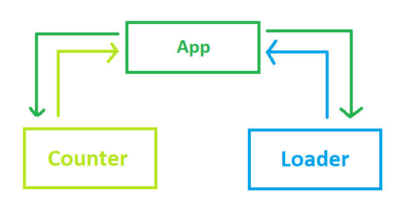

type State =
{Count: int;}
Full name: index.State
{Count: int;}
Full name: index.State
State.Count: int
Multiple items
val int : value:'T -> int (requires member op_Explicit)
Full name: Microsoft.FSharp.Core.Operators.int
--------------------
type int = int32
Full name: Microsoft.FSharp.Core.int
--------------------
type int<'Measure> = int
Full name: Microsoft.FSharp.Core.int<_>
val int : value:'T -> int (requires member op_Explicit)
Full name: Microsoft.FSharp.Core.Operators.int
--------------------
type int = int32
Full name: Microsoft.FSharp.Core.int
--------------------
type int<'Measure> = int
Full name: Microsoft.FSharp.Core.int<_>
type Msg =
| Increment
| Decrement
Full name: index.Msg
| Increment
| Decrement
Full name: index.Msg
union case Msg.Increment: Msg
union case Msg.Decrement: Msg
val init : unit -> State
Full name: index.init
Full name: index.init
val update : msg:Msg -> state:State -> State
Full name: index.update
Full name: index.update
val msg : Msg
val state : State
val view : state:'a -> dispatch:'b -> 'c
Full name: index.view
Full name: index.view
val state : 'a
val dispatch : 'b
val sprintf : format:Printf.StringFormat<'T> -> 'T
Full name: Microsoft.FSharp.Core.ExtraTopLevelOperators.sprintf
Full name: Microsoft.FSharp.Core.ExtraTopLevelOperators.sprintf
type Message =
| Increment
| Decrement
| IncrementImmediate
| IncrementDelayed
Full name: index.Message
| Increment
| Decrement
| IncrementImmediate
| IncrementDelayed
Full name: index.Message
union case Message.Increment: Message
union case Message.Decrement: Message
union case Message.IncrementImmediate: Message
union case Message.IncrementDelayed: Message
val update : msg:Message -> state:State -> State * 'a
Full name: index.update
Full name: index.update
val msg : Message
val nextState : State
val nextCmd : 'a
Multiple items
val string : value:'T -> string
Full name: Microsoft.FSharp.Core.Operators.string
--------------------
type string = System.String
Full name: Microsoft.FSharp.Core.string
val string : value:'T -> string
Full name: Microsoft.FSharp.Core.Operators.string
--------------------
type string = System.String
Full name: Microsoft.FSharp.Core.string
val update : msg:'a -> state:'b -> 'c * 'd
Full name: index.update
Full name: index.update
val msg : 'a
val state : 'b
val StartLoading : 'a
val nextState : 'c
Scaling Elmish Applications
Introduction to the techniques of breaking down large elmish programs into smaller ones
Zaid Ajaj - @zaid-ajaj
Table of content
- Introduction
- Basics of Elmish
- Concept of an "Elmish program"
- Importance of commands
- Larger programs
-
Challenges of breaking down programs
-
Breaking down parent state
- Keeping state of a single child program
- Keeping state of all children programs
-
Breaking down parent state
-
Child programs
- State updates
- dispatch
- commands
- Ongoing developement
- Resources to learn more
Introduction
Basics of Elmish
1: 2: 3: 4: 5: 6: 7: 8: 9: 10: 11: 12: 13: 14: 15: 16: 17: 18: 19: 20: |
|

Introducing Commands
- Schedule async messages
1: 2: 3: 4: 5: 6: 7: 8: 9: 10: 11: 12: 13: 14: 15: 16: 17: 18: 19: 20: 21: 22: 23: 24: |
|

1: 2: 3: 4: 5: 6: 7: 8: 9: 10: 11: 12: 13: 14: 15: 16: 17: 18: 19: 20: 21: 22: 23: |
|
1: 2: 3: 4: 5: 6: 7: 8: 9: 10: 11: 12: |
|

Loading data from web api
1: 2: 3: 4: 5: 6: 7: 8: 9: 10: 11: 12: 13: 14: 15: 16: 17: 18: 19: 20: 21: |
|
Combining the two programs

Start with spaghetti
- Divide and conquer
- Demo time!

Division Patterns
- Keep state of all children
- Keep state a single child
Recommended Directory Structure
Design Principles
- Child components don't know anything about their parents
- Child components don't know anything about their siblings
- Parent components manage child states and communication between children
Pro
- End up with modular application
- isolated components are easier to reason with
- isolated components cannot change state outside of their "program"
Cons
- Explicit wiring of children with their parents
- Explicit data communication between children
But components are not always isolated!!!
- Communication between sibling components
- "Intercept and propagate" pattern
- Make distinction between "internal" and "external" messages
Ongoing developement
- Fable & Fable.React bindings
- Documentation
- Other platforms (Electron, React Native, Node.js, Cordova)
- Your help is needed: PRs are always welcome
Resources to learn more
- Slides and apps used at https://github.com/Zaid-Ajaj/scaling-elmish-programs
- Tabula-rasa project at https://github.com/Zaid-Ajaj/tabula-rasa
- fulma-demo at https://github.com/MangelMaxime/fulma-demo
Starter templates
- Hello world Fable project at https://github.com/Zaid-Ajaj/fable-getting-started
- Hello world Fable/Elmish project https://github.com/Zaid-Ajaj/elmish-getting-started